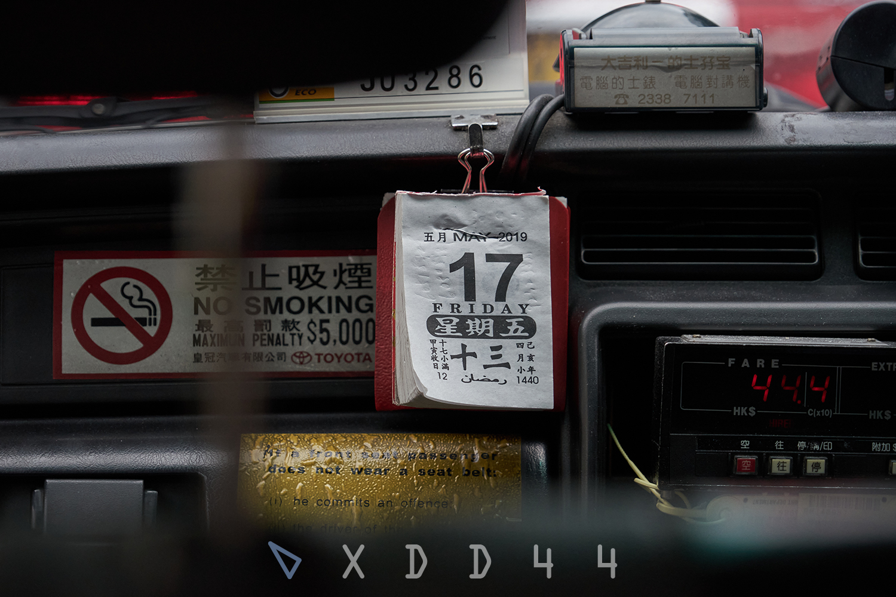
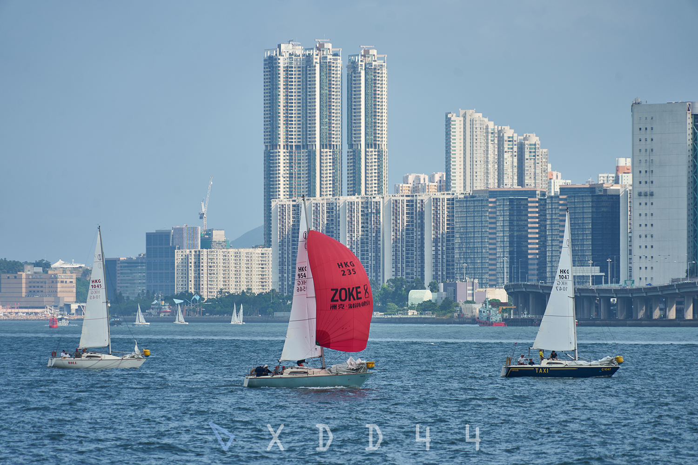

Chenyue "xdd44" DAI
Of course Hong Kong is not my hometown. But after 2-year's life here, I find that I know Hong Kong's streets and buildings much much more that my true hometown. During 18-year's growing up in my hometown, I had never attentively explored that small city, but Hong Kong attracted me as soon as I arrived here for my university life. I've spent a lot of my free time visiting both tourist spots and normal streets and through this collection I'll show you my knowledge of Hong Kong with some nice photos I picked.
Hong Kong has one of the most lively streets I've ever visited, maybe because of its high population density and a little chaotic feeling. With lights on old or new buildings and all kinds of vehicles passing by, \lLocals are playing a continuous and vivid show with their daily life. Every part of this city has its unique features and boredom doesn't exists here.
.jpg)
Fruit stall 1
When saying "chaotic feeling" above I mean on-road stalls are allowed in streets of residential areas. They are called "Hawkers in Hong Kong".
2 March 2020
Somewhere I can't remember, Mong Kok
.jpg)
Fruit stall 2
Fruit stall is my favorite kind as I feel warm when seeing their lights and colorful fruit at night.
7 March 2020
Gage Street, Central
.jpg)
Street market
You can feel it in this photo. Vendors create a lively market at the center of the road. They commonly open their stalls in the afternoon and pack them at around 9 pm.
22 March 2020
Fuk Wa Street, Sham Shui Po
.jpg)
Camera stall
Everything can be found in these road markets. This stall sells all kinds of cameras varying from old film camera to modern digital ones.
2 April 2020
Fuk Wa Street, Sham Shui Po
.jpg)
Food stall
Local snacks can't be missing for a local street. For Hong Kong they will be all kinds of Cantonese food.
12 April 2020
Cheung Chau Island

A typical Hong Kong-style street
Here is a day view of a typical Hong Kong street. Apart from those chaotic markers, all kinds of old signs, narrow spaces and buildings from last century are all part of the Hong Kong-style.
12 October 2019
Somewhere I can't remember, Yau Ma Tei
.jpg)
Bus stop
Moving to wider streets, buses as a modern transportation are everywhere. Hong Kong's bus stops are quite simple: several metal rods as railing and several signs.
2 March 2020
Somewhere I can't remember, Mong Kok
.jpg)
Taxi queue
Taxis are also common. The old Toyota Crown painted in red (Green in New Territories and Blue in Lantau) cost pretty much for a ride.
2 March 2020
Somewhere I can't remember, Mong Kok

Calendar in a taxi
I've taken taxi twice or three times. It's quite comfortable despite of the old car model. Most of the drivers are old men so you can see such a traditional calendar.
16 May 2019
On a taxi
.jpg)
Tramway
Hong Kong also features its traditional tramway. This old transportation can be dated back to 19th century. Not fast, not comfortable but the cheapest.
26 February 2020
King's Road, Quarry Bay
.jpg)
Tramway driver
Tramway driver is not an easy job as the space is narrow, there's no air conditioner and the route is boring. But this driver I met seems to be quite happy.
22 March 2020
Shing Sai Road, Sai Wan
.jpg)
Central
Tramway mainly runs on the artery of Hong Kong Island, where all kinds of people and vehicles kept flowing.
24 October 2019
Des Voeux Road, Central
.jpg)
"Wall"
Along this artery towards Quarry Bay, oppression appears. Some terrifying dense residential buildings, including so-called "Monster Building" located beside the road.
17 February 2020
King's Road, Quarry Bay
.jpg)
Concrete in glass
The concrete building reflected by the glass is the well-known "Monster Building" - Yick Cheong Building. The most astonishing part of this building for me is not its density and appearance, but that the one right in front of it is such a modern fancy commercial building. When you see this reflection, you can feel that the feature or problem lying at Hong Kong is the wide gap between living conditions or deeper, social classes.
10 May 2020
King's Road, Quarry Bay

RC Forest
And middle class commonly live in modern apartment like this. But apartment buildings in Hong Kong also have their unique feature: height. The building in this photo has more than 50 floors and apartments of such height are everywhere in Hong Kong. I'm truly surprised when I first heard this because this is as high as the second highest building in my hometown. I'm also familiar with Shang Hai but this is also just commercial buildings' height there.
3 October 2019
A balcony at Festival City, Tai Wai

Sailboats
Between two main urban areas is Victoria Harbour, wide waters with modern city surrounded. The story of Hong Kong, previous British colony, Asian trading center originated here. Today, it is used not only as a harbour but also as tourist spots and recreation place.
14 September 2019
Promenade, Whampoa

Watch the sea
It's quite easy to find a place to watch the sea and sunset - just reach the west of the coast. Sunset spotted from the city is beautiful as there're ferries passing by and islands lying at the horizon.
15 November 2019
China Ferry Terminal, Tsim Sha Tsui
.jpg)
Fishing boat
On the islands at the horizon are fishing villages. Some of them are also transforming into tourist spots, but fishermen still do their own job. It's a quite beatiful scene when fishing boats gather into the harbour as the sky becomes dark.
12 April 2020
Cheung Chau Island

Hill at night
There're much more simple but relaxing and intersting things to do when living in Hong Kong instead of being a tourist. Hills are right behind the urdan area and some even opens at night.
15 January 2020
Garden Hill, Sham Shui Po

Cycling track
In New Territories, there're long cycling tracks with few traffic lights. They're really covenient for commuting, cycling, jogging and wandering.
16 April 2020
Outside Fo Tan MTR Station

Young cyclists
The cycling track is one of my favourite place in Hong Kong as it starts from center of Sha Tin and goes along Shing Mun River and then the coastline of New Territories. Beautiful scenary and relaxing sea wind always accompany me when I ride bikes here.
12 February 2020
Shatin Twin Bridge, Sha Tin

Art works by Takashi Murakami
Artists around the world like to organize exhibitions in Hong Kong. Big or small exhibition halls are everywhere.
18 June 2019
Exhibition "MURAKAMI vs MURAKAMI", Tai Kwun, Central

Football players
Here is a ethnic diversity in Hong Kong as an international city. All kinds of races grow or live here. I'm really curious about what their childhood under Western education looks like.
22 March 2020
Conduit Road Service Reservoir Playground, Mid-levels
.jpg)
Love locks
I deeply love Hong Kong as two years of my life has passed here. I believe all locals here also love their hometown. I will be happy if I'm going to live here for a long time in the future (But of course the rent is so unbearable).
12 April 2020
Cheung Chau Island